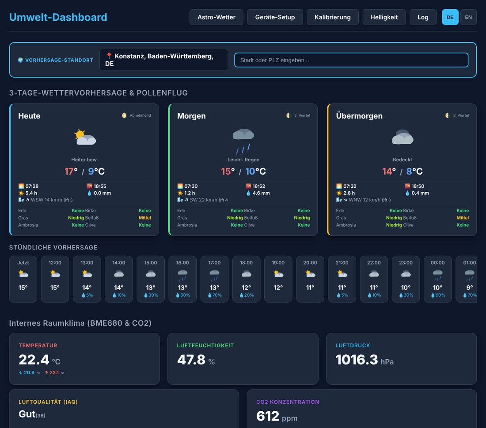
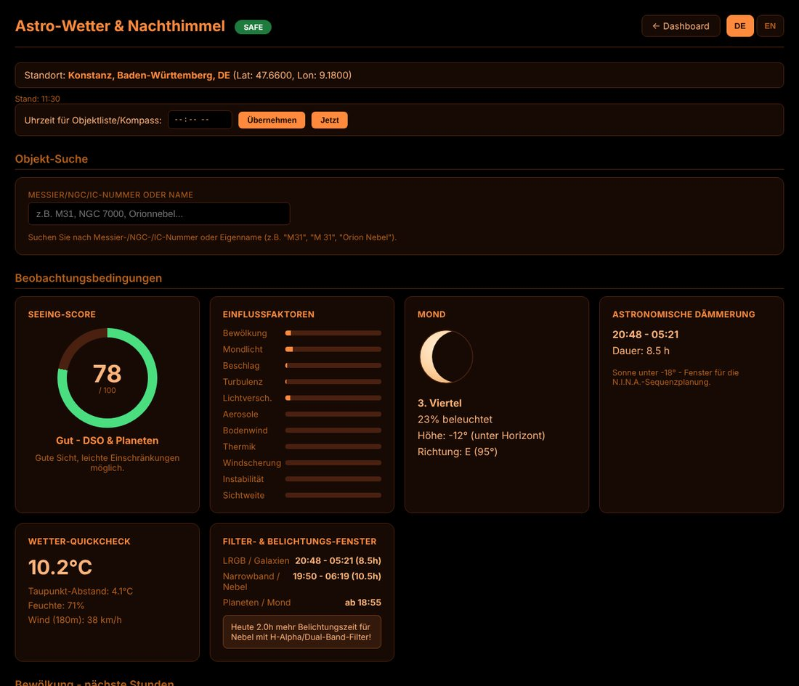
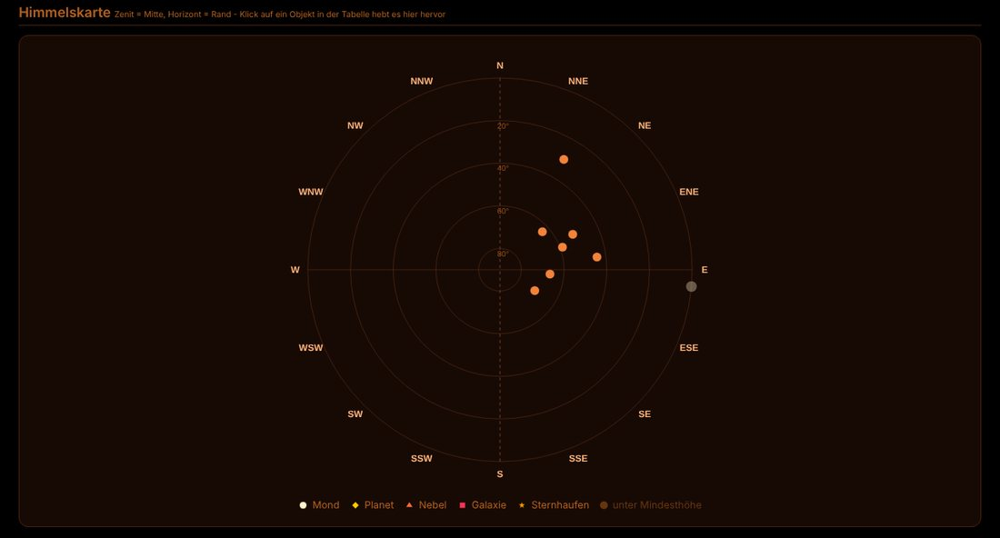
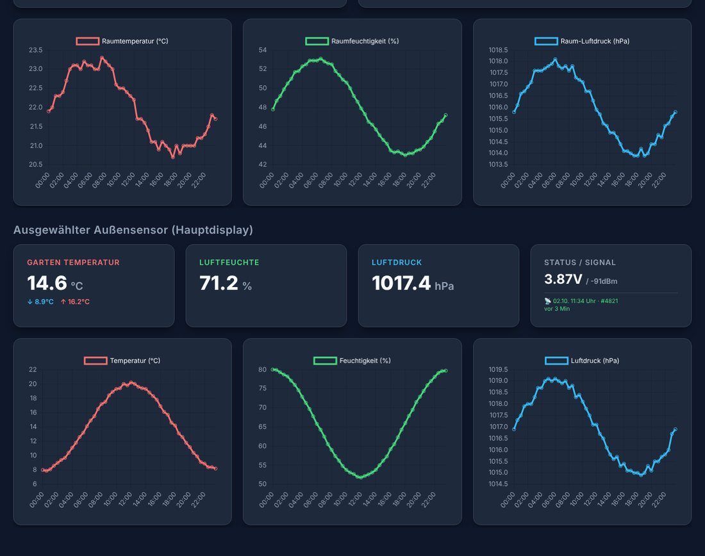

Eine Wetterstation, die ich mir so nirgends kaufen konnte: Sie misst das Raumklima, empfängt Funksensoren aus dem Garten, zeigt Vorhersage und Pollenflug an — und sagt mir nebenbei, ob sich heute Nacht das Aufbauen des Teleskops lohnt.
Das Umweltdisplay ist ein ESP32-S3 mit 7-Zoll-Touchdisplay. Alles, was es kann, steht auch als Weboberfläche im eigenen WLAN zur Verfügung — vom Handy, Tablet oder Rechner aus, ganz ohne Cloud-Konto und App.
Was ist das Umweltdisplay?
Das Gerät ist Wetterstation, Raumklima-Monitor und Astro-Planer in einem. Die Firmware läuft auf einem Elecrow CrowPanel Advance 7" (800×480 Pixel) und ist komplett in C++ mit PlatformIO geschrieben. Die Oberfläche auf dem Display basiert auf LVGL, die Weboberfläche wird direkt vom ESP32 ausgeliefert.
Die Kernfunktionen:
- Raumklima — Temperatur, Luftfeuchte, Luftdruck, Luftqualität (IAQ) und CO₂ mit Min/Max-Werten und Verlaufsdiagrammen.
- Funk-Außensensoren — Bis zu acht LoRa-Sensorknoten (866 MHz) lassen sich per Web-Oberfläche koppeln, benennen und anzeigen. Auch ein Regensensor mit Minuten-, Stunden- und Tagessumme ist dabei.
- 3-Tage-Vorhersage & Pollenflug — Wetter, Sonnenzeiten, Wind und sechs Pollenarten von Open-Meteo, dazu eine Stundenvorhersage und die Mondphase.
- Astro-Wetter — Ein Seeing-Score von 0 bis 100, Dämmerungsfenster, Bewölkung der nächsten Stunden, Mondstand und eine Liste der heute Nacht sichtbaren Objekte. Auf dem Display gibt es dafür einen eigenen Nachtmodus in reinem Rot.
- NINA-Anbindung — Das Gerät meldet sich per ASCOM Alpaca als Safety Monitor und sagt N.I.N.A., ob die Bedingungen zum Beobachten taugen.
- Historie auf SD-Karte — Messwerte werden auf der SD-Karte gesichert, damit sie Neustarts überstehen und die Flash-Zugriffe das Display nicht stören.
- Selbstüberwachung — WLAN-Watchdog mit automatischem Neuverbinden, E-Mail-Alarm bei Sensorausfall und ein Systemlog im Browser.

Hardware
- Display & Rechner: Elecrow CrowPanel Advance 7" mit ESP32-S3, 16 MB Flash, PSRAM und Touch (800×480, RGB)
- Raumsensoren: BME680 für Temperatur, Feuchte, Druck und Luftqualität (mit automatischem Fallback auf BME280), SCD41 für CO₂, CCS811 als Zusatz für Luftqualität
- Uhr: Batteriegepufferte Echtzeituhr BM8563 auf dem Panel, zusätzlich NTP-Zeitabgleich
- Funk: LoRa-Empfänger (RFM95/SX1276) an einem Arduino Pro Mini, der die Pakete per UART an den ESP32 weiterreicht
- Speicher: SD-Karte für Historie und Katalogdaten, LittleFS für Einstellungen
- Außensensoren: Selbstgebaute LoRa-Knoten für Temperatur, Feuchte, Druck und Regen
Warum der Pro Mini?
Anfangs hing das LoRa-Modul direkt am ESP32. Das Ergebnis waren Mikroruckler im Bild: Der SPI-Bus und der Interrupt des Funkmoduls kamen sich mit dem RGB-Display und dem PSRAM in die Quere. Die Lösung ist eine kleine Bridge: Ein Arduino Pro Mini übernimmt den kompletten Funkempfang und schickt nur noch fertige Textzeilen mit Messwerten, Signalstärke und Signal-Rausch-Verhältnis per UART an den ESP32. Damit ist der Funkempfang vom Display-Bus entkoppelt.
Astro-Wetter und Nachthimmel
Dieser Teil ist aus meinem Hobby entstanden. Die Vorhersagedaten stecken ohnehin schon im Gerät, daher liegt es nahe, daraus auch eine Beobachtungsprognose zu berechnen.
- Seeing-Score — Setzt sich aus Bewölkung, Mondlicht, Taupunkt, Wind, Lichtverschmutzung (Bortle-Klasse), Aerosolen, Thermik, Windscherung, Instabilität und Sichtweite zusammen. Jeder Faktor ist einzeln als Balken sichtbar.
- Dämmerungsfenster — Astronomische und nautische Dämmerung, daraus getrennte Zeitfenster für Breitband-Aufnahmen und für Schmalband mit H-Alpha-Filtern.
- Objektliste und Himmelskarte — Welche Objekte stehen heute Nacht hoch genug, wann und wie lange, und brauche ich einen Meridianflip? Die Karte zeigt sie mit Zenit in der Mitte, per Klick in der Tabelle wird ein Objekt hervorgehoben.
- Teleskop- und Kamera-Profile — Mit Brennweite, Öffnung und Sensorgröße wird geprüft, ob ein Objekt das Bildfeld sinnvoll ausfüllt.
- Objektsuche — Messier-, NGC- und IC-Nummern oder Eigennamen. Den Katalog erzeuge ich mit einem kleinen eigenen Browser-Werkzeug aus der OpenNGC-Datenbank.
- Uhrzeit-Vorschau — Die Objektliste lässt sich für eine beliebige Uhrzeit der Nacht berechnen.


Außensensoren und Raumklima
Gekoppelte Funksensoren erscheinen automatisch in der Weboberfläche. Pro Sensor lässt sich festlegen, welche Diagramme angezeigt werden, welcher Sensor auf dem Hauptdisplay erscheint und ob bei einem Ausfall eine E-Mail verschickt wird. Die Sensorwerte lassen sich über Stützpunkt-Tabellen kalibrieren. Wenn ein Sensor nach einem Neustart noch kein frisches Paket gesendet hat, zeigt das Gerät den zuletzt bekannten Wert in Orange.

Software-Architektur
Die Firmware besteht aus einer großen main.cpp und mehreren Header-Modulen:
main.cpp— Sensoren, LVGL-Oberfläche, Webserver, Pairing, Historie, Setup und Hauptschleifewebpages.h— Dashboard, Sensor-Setup, Kalibrierung, Helligkeit und Astro-Seite als eingebettetes HTML/JS, inklusive Deutsch/Englisch-Umschalterastro_calc.h— Seeing-Score, Mond, Dämmerung, Objektberechnung und Katalogastro_ui.h— Astro-Screen im roten Nachtmodus auf dem Displayalpaca_safety.h— ASCOM-Alpaca-Safety-Monitor mit UDP-Discovery für N.I.N.A.pollenData.h— Open-Meteo-Abruf für Wetter und Pollenweather_bg.h,weather_icons.h— animierte Wetterhintergründe und SymboleemailAlarm.h— E-Mail-Alarm bei Sensorausfallsyslog.h— Systemlog mit Abruf im Browserarduino.receiver/— Sketch für die LoRa-Bridge auf dem Pro Minitools/ngc-catalog-builder/— Browser-Werkzeug, das aus OpenNGC den Objektkatalog erzeugt
Das Abrufen der Wetterdaten läuft in einem eigenen Task auf dem zweiten Kern, damit die Anzeige nie auf das Netzwerk warten muss. Die Firmware lässt sich per OTA-Update direkt über den Browser aktualisieren.
Offen für Smart Home und KI
Neben der Weboberfläche gibt es JSON-Schnittstellen für Messwerte, Vorhersage und Astro-Daten. Eine kompakte Zusammenfassung unter /api/llm-context ist für Home Assistant gedacht, zum Beispiel in Kombination mit einem lokalen Sprachmodell: „Wie wird das Wetter?“ oder „Ab wann ist heute gutes Astro-Wetter?“.
Aktueller Stand
Das Gerät läuft im Alltag und wird laufend weiterentwickelt. Stand Oktober 2026:
- Raumklima, Funksensoren, Vorhersage und Pollenflug laufen stabil
- Astro-Wetter mit Objektliste, Himmelskarte und Teleskop-Profilen ist nutzbar
- Die Anbindung an N.I.N.A. als Safety Monitor ist eingebaut
- Historie auf SD-Karte, Watchdog und E-Mail-Alarm sind aktiv
Was noch kommt, sind weitere Feinarbeiten an Oberfläche und Katalog sowie Langzeittests über mehrere Wochen.
Quellcode
Das gesamte Projekt ist Open Source auf GitHub verfügbar:
Zurück zur Übersicht